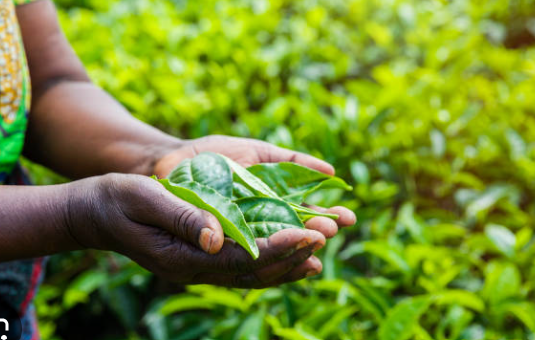
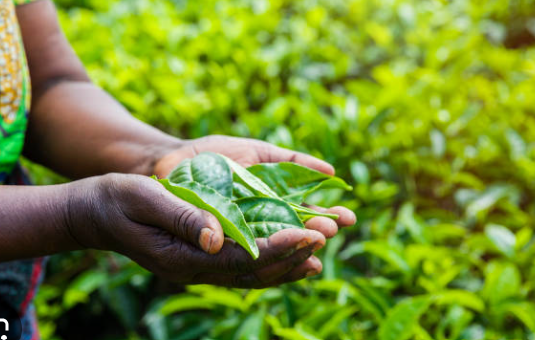

UBagri farmer support
work with farmer who want
right education and be successful on market.
Watch DEMO
 


only way to farm production


software for farmers
this is business that helps farmers in Africa to get market access, stay updated on predictable climate change (weather), and get more resources for digital farming.
Our services offer farmers
Experience the future of weather forecasting with our state-of-the-art weather determination technology. Utilizing advanced algorithms and real-time data, our system delivers precise and reliable weather predictions tailored to your location. Whether you're planning your day, organizing an event, or preparing for extreme weather conditions, our accurate forecasts empower you to make informed decisions with confidence. Stay ahead of the elements with our cutting-edge weather determination, ensuring you’re always prepared for whatever the skies may bring. this is business that helps farmers in Africa to get market access, stay updated on predictable climate change (weather), and get more resources for digital farming.
At the heart of our dynamic marketing team is our dedicated Marketing Representative, a vital link between our innovative products and our valued customers. With a keen eye for market trends and a passion for building meaningful relationships, our representative ensures that our brand's voice resonates with the right audience. They craft compelling marketing strategies, foster partnerships, and drive engagement across multiple platforms.
Unlock the potential of modern farming with our comprehensive agricultural resource education platform. Designed for farmers, students, and agricultural enthusiasts, our resources provide in-depth knowledge and practical insights into sustainable farming practices, crop management, and innovative agricultural technologies. Whether you're looking to boost your crop yields, implement eco-friendly farming methods, or stay updated with the latest industry trends, our educational tools and resources are here to guide you every step of the way. Join our community of forward-thinking agriculturalists a nd cultivate a brighter, more sustainable future.